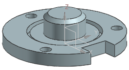
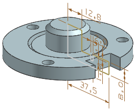
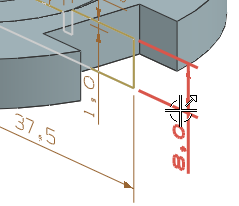
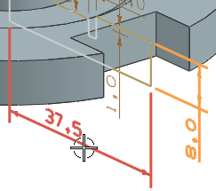
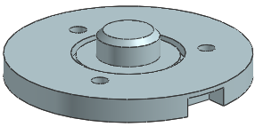

打开 des14_edit_parameters_cover_1。
法兰的直径和厚度在绕轴回转的草图中定义，该草图为回转特征的内部草图。

在部件导航器中右击回转 (1)并选择显示尺寸。
您现在可以编辑显示在图形窗口中的草图尺寸。

在图形窗口中双击高度尺寸8,0。

在 p1屏显输入框中键入10并回车。
值将在对话框中更新，但不会在图形窗口中更新，直到您完成所有编辑。
点击半径尺寸37,5。

在 p0屏显输入框中键入50并回车。
单击鼠标中键以完成编辑并更新模型。
按下 F5 键以刷新显示并移除临时尺寸。
